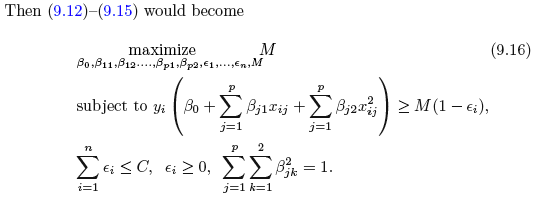

4 Support Vector Machines
This deals with classification and it is also extended to be able to deal with multiple classes.
The Support Vector Machine is a generalization of a simple and intuitive classifer called the maximal margin classifier, which is elaborated further in the following section. Although it only works is the classes that are clearly seperateable, which is rarely the case. Therefore the Support Vector Machine is created. The sections firstly describes the Maximal Vector Machine and then extends with the Support Vector Machines. It should be clearly noted, that Maximal Margin Classifier ≈ Support Vector Machine. Even though people tend to not distinguish, there is a clear difference between the capabilities and charactaristics of the two appraoches.
4.1 Maximal Vector Machines
This is a method where we apply optimal separating hyperplane. Before continuing, we first define what a hyperplane is.
4.1.1 What is a hyperplane?
It is a \((p-1)\) dimensional flat substance. It is visualizable when \(p =< 3\), as it is a flat two-dimensional subspace. But when p gets larger than 3, then it is difficult to visualize.
In a two dimensional space the function is the following:
\[\begin{equation} \beta_0+\beta_1X_1+\beta_2X_2 = 0 \tag{4.1} \end{equation}\]
Notice that this is merely a line, since a two dimensional space is a line. This means that for any \(X=(X_1,X_2)^T\) is a point on the hypeplane.
We can extend the equation above tow more dimensions by:
\[\begin{equation} \beta_0+\beta_1X_1+\beta_2X_2 ... \beta_pX_p = 0 \tag{4.2} \end{equation}\]
Hence the same analogy applies, if a point \(X = (X_1,X_2,...,X_p)^T\) satisfies the equation above, then it is on the hyperplane, and well if not, then it is not on the hyperplane, meaning on one or the other side of the hyperplane. This can be written with:
\[\begin{equation} \beta_0+\beta_1X_1+\beta_2X_2 ... \beta_pX_p > 0 \tag{4.3} \end{equation}\]
\[\begin{equation} \beta_0+\beta_1X_1+\beta_2X_2 ... \beta_pX_p < 0 \tag{4.4} \end{equation}\]
Thus, what the hyperplane does, it that it divides the whole space into two separate regions, hence classifying the observations.
A two dimensional hyperplane can be shown with:

Figure 4.1: 2D Hyperplane
We see that all the blue dots refer to a sceneario explained in equation (4.3) and the red dots to a scenario (4.4), but merely with X0, X1, and X2.
4.1.2 Classification Using a Separating Hyperplane
Suppose that we have a \(n x p\) data paxtrix X that consists of n training observations in a p-dimnesional space.
\[\begin{equation} x_{1} = \begin{pmatrix} x_{11} \\ \vdots \\ x_{1p} \end{pmatrix},...,x_n= \begin{pmatrix} x_{n1} \\ \vdots \\ x_{np} \end{pmatrix} \tag{4.5} \end{equation}\]
Where the observations response belongs to one of two classes, that can be written as \(y_1,...,y_n\in\text{{-1,1}}\). Then the goal is to correctly classify test observations \(x^*=(x^*_1...x^*_p)\).
We have previously seen such methods, such as logistic regression and LDA, where this separation is done based on a hypeplane approach, where instead of classifying based on probabilities and a cut-off value, our hyperplane is the cut-off, that decides whether an observation is class 0 or 1, based on where it lies relative to the hyperplane, see the equations (4.2). Such examples can we seen with the following:
Figure 4.2: Hyperplane
Where we see that the line (2 dimensional hyperplane) separates the space into two subspaces. The intuition is now the same as represented in figure 4.1.
4.1.3 The Maximal Margin Classifier
When looking at 4.2 we see that the observations can be clearly split, and there are in fact an infinite amount of hyperplanes that can be drawn. So now comes the question what hyperplane to choose then?
This is where we introduce the Maximal Margin Classifier which fits a line that maximize the distance from the observation to the hyperplane, hence it is not necesarily the observations closed to the class of observations, but the observations under evaluation will always be those ‘at the border’ og the observations in the specific group of observations for the class. When these observations are identified, we are able to draw the hyperplane with the maximized margin, see the following:

Figure 4.3: Maximum Margin Classifer
Now we see that hyperplane is only dependent on three observations, meaning by changing all other observations, the hyperplane and hence the classification will not change, unless they get closer to the hyperplane, than the support vectors (i.e., within the margins). In other words, by moving one of the support vectors, the whole hyperplane will change as well. Thus, this is something an analyst using maximal margin classfier, must be aware of.
We see the margins, which are the space between the support vectors and the hyperplane and the arrows reflect the distance between the support vectors and the hyperplane.
But what can we deduct from the distance from any observation to the hyperplane?
The further an observation is from the hyperplane, the more certain is it, that it is correctly classified, and thus the closer it is to the hyperplane, the more certainty for misclassification.
Thefore the support vectors = the observations closest and with equal length to the hyperplane
We often see, that the maximal margin classifer is successfull, but when p is large, there is a risk of overfitting.
4.1.4 Construction of the Maximal Margin Classifer
Let us say that we have a maximal margin hyperplane, that is based on a data set of the following:
- \(x_1,...,x_n \in \mathbb{R}^p\) meaning that we have countable (real number) of parameters (i think that is what it means)
- Which has the following class labels associated \(y_1,...,y_n\in \text{{-1,1}}\).
The optimization of the hyperplane is through optimization of M subject to the 2. bullet:
- Maxmize the margins, which is given by.
\[\begin{equation} \text{maximize M} \\ \beta_0,\beta_1,...,\beta_p,M \tag{4.6} \end{equation}\]
\[M = \frac{2}{||B||}\],
Which we want to maximize M.
- Guarantee that each observations will be on the correct side of the hyperplane, provided that M is positive. This consists of two parts.
\[\begin{equation} \text{subject to} \sum_{j=1}^p\beta^2_j = 1 \tag{4.7} \end{equation}\]
\[\begin{equation} y_i(\beta_0 + \beta_1x_1 + \beta_2x_2+...+\beta_px_{ip})\leq\text{M }\forall i = 1,...,n \tag{4.8} \end{equation}\]
4.1.5 The Non-separable Case
So far it is covered where the classes can be separated, but often that is not the case. It will with the following show examples where the observations are not clearly seperateable. Hence one cannot contruct the a hyperplane according to the maximal margin classifier, sence one simply cannot make the margins.
Therefore, soft margins are introduced, where one is intentionally misclassifying observations, and thus the maximal margin classifier is generalized. This scenario is called the Support Vector Classifier, which is elaborated in the following.
4.2 Support Vector Classifiers
4.2.1 Overview of the Support Vector Classifier
Recap of what we already know
- The hyperplane used for classification has been optimized for maximial margins to to the observations. By adjusting one of the support vectors (those that are used to estimate the hyperplane) the whole hyperplane will be reevaluated. This is strong disadvantage, as for classification of the test data, we are likely to see a great change in the classifications, see an example in figure 4.5
- It is assumed, that one is able to clearly distinguish between the two classes. That is rarely the case. See an example in figure 4.4.
- Support Vectors are only observations that are on the margins of the hyperplane.
The new concept
We allow the model to intentionally misclassify observations, hence we fit a hyperplane that does not perfectly separate the two classes. Therefore training observations may lie in the margins of the correct side, but also go beyond the hyperplane, see an example of this, where observations are in the margins and on the wrong side, in figure ??.
We get the following advantages
- Greater robustness to individual observations. Hence the model will not change as dramastically as with maximum margin classifer. Thus we introduce more model bias, recall the bias-variance tradeoff.
- Better classification of most of the training data.
Figure 4.4: Inseperatable classes
Figure 4.5: Volatility in MMC
Figure 4.6: Applying soft margins
4.2.2 Details of the Support Vector Classifer
So now we can’t follow the optimization procedure as specified in section 4.1.4, as the we cannot satisfy the constraint, that all observations must either be on the margin or furher away from the margin. Thus we have a changed optimization procedure, where the slack variable is introduced.
The optimization process is now as following:
- First we maximize the margins given the coefficients and slacks, hence:
\[\begin{equation} \text{maximize M} \\ \beta_0,\beta_1,...,\beta_p,e_1,...,e_n,M \tag{4.9} \end{equation}\]
- Where the sum of the betas squared are still = 1, but we introduce the slack variable.
- Sum of betas
\[\begin{equation} \text{subject to} \sum_{j=1}^p\beta^2_j = 1 \tag{4.10} \end{equation}\]
- The slack variable, explained after.
\[\begin{equation} e_i \geq 0,\text{ }\sum_{i=1}^n\leq C \tag{4.11} \end{equation}\]
- And hence we get
\[\begin{equation} y_i(\beta_0 + \beta_1x_1 + \beta_2x_2+...+\beta_px_{ip})\leq\text{M }(1-e_i) \tag{4.12} \end{equation}\]
The slack variable \((e)\): The observations can fall into one of three categories of slack:
- When \(e_i=0\), meaning when \(e\) of the \(i'th\) observation is on the correct side of the margins.
- When \(e_i>0\), meaning when \(e\) of the \(i'th\) observation is on the wrong side of the margins.
- When \(e_i>1\), meaning when \(e\) of the \(i'th\) observation is on the wrong side of the hyperplane.
Notice that we need to specify C in equation (4.11), as the sum of all slacks must be below or equal to a given level. Thus we are effectively able to manipulate the level of slack we introduce to the model, thus C = tuning parameter for the Support Vector Classifier. This is generally chosen via cross-validation.
Notice when C = 0, then we are merely having the Maximid Margin Classifer scenario.
Since we impose slack in the optimization process, we also add more observations to the set of support vectors, meaning that the support vectors are now both the observations on the margin and observations violating the margins (i.e., on the wrong side of the margin).
The support vectors are now both the observations on the margin and observations violating the margins.
There as we increase the allowance for slack we also widen the margins. The following figure, show examples where the slack is gradually decreased.

Figure 4.7: Support Vector Classifiers with different C
We see with the highst value of the tuning parameter, all observations are support vectors, thus a large change in on observation will not change to a big change in the hyperplaned. Looking at the top left, we have not imposed as much slack and the non-support vectors are (not influential of the hyperplane) are encircled with green.
We see that the supper vector classifier creates a sparsity in the model, although this time it is not on the features but on the observations. Recall that e.g., with lasso we gradually changed the effect of some features, where some features could in fact have an effect of 0. This does quite the same, but just with the points. As we see that all the points that are in the correct side of the margins, can be changed any time within the correct space, without changing the mode. Hence we have sparsity in the data, not the features. Although it is important to notice, that you need the non support vectors to decide which obersvations that are important for the model, and once you have found the support vectors, you can in practice exclude all the non-support-vectors from the model.
Critique of support vector classifiers
Despite the Support Vector Classifiers with soft margins performs better and is more stable than maximum margin optimization, it is not capable of dealing with all situations, as it is simply attempting to split the area into two regions, the following figure, show and example of support vector classifier not being sufficient.
Figure 4.8: Support Vector Classifier critiqe
We see that the model is not able to effective split the space into effective classifiers. The reason for this, is that we are effectively working with a linear model with the slack element introduced for the fitting.
The following section will attempt to deal with this.
4.3 Support Vector Machines
We see that the Support Vector Machine is based on the Support Vector Classifer, which is an extension to Maxmized Margin Classifier. Therefore, the same analogy applies, but the overall fitting procedure is altered, to better deal with certain situations.
The Support Vector Machine is invented to be able to deal with classification settings, where the observations can’t be separated with a linear setting.
4.3.1 Classification with non linear decision boundary
We can extend the variables, so we dont work with \(X_1,X_2,...,"_p\), but instead work with \(X_1,X_1^2,X_2,X_2^2,...,X_p,X_p^2\). This will again alter the optimization procedure that we have previously seen. Note, in principle one could also introduce interactions, of the form \(X_jX_{j'}\text{ for } X_j ≠ X_{j'}\). One must merely be careful and not enlarge the space feature space too much, making it computationally too difficult.
Thus to be able to separate the observations, when they are taken to a higher dimension, hence we go from \((X_1,X_1)\) to \((X_1,X_1^2)\). Basically what one does, is find the x value of the given variable and plots it against the \(x^2\) value.
Optimization procedure

So we see that the overall process is similar to equations ((4.9) and (4.12)). But we merely introduced the polynomial terms, but the principle is the same, e.g., we are having a slack parameter, and the slack (\(e\)) can only summarize to the constraint, but not more.
The huge drawback on this, is that it quickly gets computationally heavy, this is what the support vector machine is dealing with, which is explained next.
4.3.2 The Support Vector Machine
This gets a bit more technical. The support vector machine has the following elements:
- Inner products: Relies on the inner products instead of the actual observations. The inner product is defined by \(\langle a,b \rangle=\sum_{i=1}^{r}a_ib_i\), thus the inner product of two observations \(x_i,x_{i'}\) is given by
\[\begin{equation} $$\langle a,b \rangle=\sum_{j=1}^{p}\alpha_i \langle x_{ij}x_{i'j} \rangle$$ \tag{4.13} \end{equation}\]
It is found that \(\alpha_i\) is nonzero for the support vectors in the solution (thus non-support vectors’ \(\alpha\) = 0). And all we need are the pairs, \(\pmatrix{n\\2}\), inner products \(x_i,x_{i'}\).
Notice that \(\pmatrix{n\\2} = n(n-1)/2\)
The process above is generalized with kernels. Thus the kernel is practically a function that identifies similarities between any two observations.
- Kernels: a quantification of similarities between two points. For Support Vector Machines we work with polynomial kernels:
\[\begin{equation} K*x_i,x_j)=(1+\sum_{n=1}^px_{ij}x_{i'j})^d \tag{4.14} \end{equation}\]
- If d = 1, then it is linear (SVC), when we add degrees (d), we make the support vector classifier more flexible, and that is what we know as the support vector machine (SVM).
- So notice, the linear kernel is the the support vector classifier/
- Gamma \((\gamma)\): Is a positive constant, and can be seen as a tuning parameter, the higher gamma, the more flexibility and thus less model bias.
We see in the following plot how the Support Vector Machine acts and how it is able to deal with non-linear situations.
Figure 4.9: Support Vector Machine
Notes on this could be elaborated further
4.3.3 SVMs with More than Two Classes
There are many proposals of dealing with more than two classes, the most common are:
- One-Versus-One Classification.
- One-Versus-All Classification.
4.3.4 Relationship to logistic regression
The book has a comparison between the two, and it shows that logistic regression and SVM classifiers tend to produce very similar results. Although:
- Logistic Regression tend to perform better, when the classes are overlapping.
- SVM tend to perform better when the classes are well separated.
4.4 Process of kernels methods
- Prepare the data: Split into training and testing
- Select the kernel function, e.g., linear, polynomial or radial.
- Select the parameter of kernel function (e.g., degree for polynomial kernel, \(\gamma\) for radial kerned) and the valjue of C.
- Train the model
- Test the model.
Application in R
- Use library
e1071, using `svm(DV~IV,kernel = …,cost = …) - Use
summary()to see the details - Use
perdict()to evaluate the test error.
4.5 Lab
4.5.1 Support Vector Classifier
Notice, that the kernel is linear
First we create some data, that we are going to classify.
set.seed(1)
x <- matrix(rnorm(20*2)
,ncol = 2)
y <- c(rep(-1,10),rep(1,10)) #Assigning classes
x[y==1,] <- x[y==1,] + 1 #We add 1 for each observation where y = 1
plot(x
,col = (3-y)) #dynamic appraoch for coloring, that is pretty cleverdat <- data.frame(x = x,y = as.factor(y))
library(e1071)
svm.fit <- svm(y ~ .
,data = dat
,kernel = "linear" #The type of kernel
,cost = 10 #The tuning parameter C
,scale = FALSE) #We dont want to scale the data, it is not necessary with what we have prodeceScaling = if TRUE all features will be set to a mean of zero (subtracting the mean for each observation) or standard deviation of one, depending on the application.
Plotting the classifier
plot(svm.fit,dat)now we see the 2d hyperplane. We preserve colors of the class labels and all observations that are on the wrong side of the margins are marked with an x.
Notice that the axis’ are the two features, if we had three features, then it would be three dimensional, if we had four then it really starts getting difficult.
We can now access the support vectors:
t(t(svm.fit$index))## [,1]
## [1,] 1
## [2,] 2
## [3,] 5
## [4,] 7
## [5,] 14
## [6,] 16
## [7,] 17We see that there are 6 support vectors.
Now we can access the summary().
summary(svm.fit)##
## Call:
## svm(formula = y ~ ., data = dat, kernel = "linear", cost = 10, scale = FALSE)
##
##
## Parameters:
## SVM-Type: C-classification
## SVM-Kernel: linear
## cost: 10
##
## Number of Support Vectors: 7
##
## ( 4 3 )
##
##
## Number of Classes: 2
##
## Levels:
## -1 1- We see the input data and characteristics that we specified.
- We see that there are 6 support vectors
- We see that three support vectors are for class 0 and three for class 1.
- We see that number of classes
- We see that levels in the data
Testing other values of C
svm.fit <- svm(y~.
,data = dat
,kernel = "linear"
,cost = 0.1
,scale = FALSE)
plot(svm.fit,dat)svm.fit$index## [1] 1 2 3 4 5 7 9 10 12 13 14 15 16 17 18 20We see that the model did widen the margins.
Notice that cost and C is not the same. Cost = the cost that a violation has. The greater the cost, the less allowance for support vectors as fewer observations will be allowed to the wrong side of the margins.
Applying tune() to tune C
set.seed(1)
tune.out <- tune(method = svm
,y~.
,data = dat
,kernel = "linear"
,ranges = list(cost = c(0.001,0.01,0.1,1.5,10,100)) #Hard coding different tuning params.
)
summary(tune.out)##
## Parameter tuning of 'svm':
##
## - sampling method: 10-fold cross validation
##
## - best parameters:
## cost
## 0.1
##
## - best performance: 0.05
##
## - Detailed performance results:
## cost error dispersion
## 1 0.001 0.55 0.4377975
## 2 0.010 0.55 0.4377975
## 3 0.100 0.05 0.1581139
## 4 1.500 0.15 0.2415229
## 5 10.000 0.15 0.2415229
## 6 100.000 0.15 0.2415229We see that the error appears to be lowest with a tuning param of 1.5 and 10.
We can access the best model from the object.
bestmod <- tune.out$best.model
summary(bestmod)##
## Call:
## best.tune(method = svm, train.x = y ~ ., data = dat, ranges = list(cost = c(0.001,
## 0.01, 0.1, 1.5, 10, 100)), kernel = "linear")
##
##
## Parameters:
## SVM-Type: C-classification
## SVM-Kernel: linear
## cost: 0.1
##
## Number of Support Vectors: 16
##
## ( 8 8 )
##
##
## Number of Classes: 2
##
## Levels:
## -1 1We see the best model above. For assessment of the elements I refer to a previous assessment.
Predicting the class label_
xtest <- matrix(rnorm(2*20),ncol = 2)
ytest <- sample(c(-1,1),20,rep = TRUE)
xtest[ytest==1,] = xtest[ytest==1,] + 1
testdat <- data.frame(x = xtest, y=as.factor(ytest))ypred <- predict(bestmod,testdat) #Notice that we call the bestmod
table(predict = ypred,tryth = testdat$y)## tryth
## predict -1 1
## -1 9 1
## 1 2 8We see that 12 of the observations are correctly classified.
We can do the same but with another C.
Altering C
#
svm.fit <- svm(y ~.
,data = dat
,kernel = "linear"
,cost = 0.01
,scale = FALSE)
#Predictions
ypred <- predict(svm.fit,testdat)
table(predict = ypred,tryth = testdat$y)## tryth
## predict -1 1
## -1 11 6
## 1 0 3This does in in fact appear to improve the model. Even though we tested that in previously. I guess maybe the this fits better to the test data than the best in sample model.
Recall that with introducing slack we are intentionally misclassifying training observations to contruct a more robust model, that is perhaps what we see above, as in this setting, the lower the cost the greater the allowance for slack.
New example
Consider a situation in which the two classes are linearly separable. Then we can
x <- matrix(rnorm(20*2)
,ncol = 2)
y <- c(rep(-1,10),rep(1,10)) #Assigning classes
#Run it a couple of times
x[y==1,] = x[y==1,] + 0.5
plot(x,col = (y+5)/2,pch = 19)
x[y==1,] = x[y==1,] + 0.5
plot(x,col = (y+5)/2,pch = 19)
x[y==1,] = x[y==1,] + 0.5
plot(x,col = (y+5)/2,pch = 19)
x[y==1,] = x[y==1,] + 0.5
plot(x,col = (y+5)/2,pch = 19)We see that they get further separated.
dat <- data.frame(x = x,y = as.factor(y))
svm.fit <- svm(y~.
,data = dat
,kernel = "linear"
,cost = 100000)
summary(svm.fit)##
## Call:
## svm(formula = y ~ ., data = dat, kernel = "linear", cost = 100000)
##
##
## Parameters:
## SVM-Type: C-classification
## SVM-Kernel: linear
## cost: 100000
##
## Number of Support Vectors: 3
##
## ( 1 2 )
##
##
## Number of Classes: 2
##
## Levels:
## -1 1We can also asses the training error.
table(svm.fit$fitted,dat$y)##
## -1 1
## -1 10 0
## 1 0 10We see that no training observations was falsely classified.
4.5.2 Support Vector Machine
Now we are going to fit and SVM using a non-linear kernel.
set.seed (1)
x <- matrix (rnorm(200*2),ncol = 2)
x[1:100,]=x[1:100 ,] + 2
x[101:150,]= x[101:150,] - 2
y <- c(rep(1,150),rep(2,50) )
dat <- data.frame(x = x,y = as.factor(y))
plot(x,col = y,pch = 19)We see that the data is clearly not separable.
Now we can train the SVM and after plot
set.seed(1)
train <-sample(200,100)
svm.fit <- svm(y ~ .
,data = dat[train,]
,kernel = "radial"
,gamma = 1 #We define gamma, as it is a radial kernel, as gamma increase so does flexibility
,cost = 1)
plot(svm.fit,dat[train,])We see that it is clearly non linear. We can call the summary.
summary(svm.fit)##
## Call:
## svm(formula = y ~ ., data = dat[train, ], kernel = "radial", gamma = 1,
## cost = 1)
##
##
## Parameters:
## SVM-Type: C-classification
## SVM-Kernel: radial
## cost: 1
##
## Number of Support Vectors: 41
##
## ( 22 19 )
##
##
## Number of Classes: 2
##
## Levels:
## 1 2We see that the summary produces exactly the same as what we have seen in the previous section.
Now we try with another value of Cost
set.seed(1)
train <-sample(200,100)
svm.fit <- svm(y ~ .
,data = dat[train,]
,kernel = "radial"
,gamma = 1 #We define gamma, as it is a radial kernel, as gamma increase so does flexibility
,cost = 100000)
summary(svm.fit)##
## Call:
## svm(formula = y ~ ., data = dat[train, ], kernel = "radial", gamma = 1,
## cost = 100000)
##
##
## Parameters:
## SVM-Type: C-classification
## SVM-Kernel: radial
## cost: 100000
##
## Number of Support Vectors: 31
##
## ( 17 14 )
##
##
## Number of Classes: 2
##
## Levels:
## 1 2Now we see that we increase the cost of violations and thus fewer observations will be on the wrong side of the margins.
Using tune() to find best gamma and cost using CV
set.seed(1)
tune.out <- tune(method = svm
,y ~.
,data = dat[train,]
,kernel = "radial"
,ranges = list(cost = c(0.1,1,10,100,1000)
,gamma = c(0.5,1,2,3,4))
)
summary(tune.out)##
## Parameter tuning of 'svm':
##
## - sampling method: 10-fold cross validation
##
## - best parameters:
## cost gamma
## 1 0.5
##
## - best performance: 0.12
##
## - Detailed performance results:
## cost gamma error dispersion
## 1 0.1 0.5 0.28 0.15491933
## 2 1.0 0.5 0.12 0.07888106
## 3 10.0 0.5 0.15 0.10801234
## 4 100.0 0.5 0.17 0.11595018
## 5 1000.0 0.5 0.23 0.14944341
## 6 0.1 1.0 0.25 0.13540064
## 7 1.0 1.0 0.14 0.09660918
## 8 10.0 1.0 0.16 0.10749677
## 9 100.0 1.0 0.21 0.15238839
## 10 1000.0 1.0 0.20 0.14142136
## 11 0.1 2.0 0.28 0.14757296
## 12 1.0 2.0 0.15 0.10801234
## 13 10.0 2.0 0.19 0.15238839
## 14 100.0 2.0 0.18 0.14757296
## 15 1000.0 2.0 0.23 0.12516656
## 16 0.1 3.0 0.28 0.15491933
## 17 1.0 3.0 0.15 0.10801234
## 18 10.0 3.0 0.20 0.16329932
## 19 100.0 3.0 0.20 0.13333333
## 20 1000.0 3.0 0.27 0.11595018
## 21 0.1 4.0 0.29 0.14491377
## 22 1.0 4.0 0.16 0.09660918
## 23 10.0 4.0 0.18 0.13984118
## 24 100.0 4.0 0.21 0.11972190
## 25 1000.0 4.0 0.31 0.15951315We see that the lowest error is around model 2, with an CV error of 0.12. Thus we select cost of 1 and gamma of 0.5. We can also call the best model as seen previously.
bestmod <- tune.out$best.model
summary(bestmod)##
## Call:
## best.tune(method = svm, train.x = y ~ ., data = dat[train, ], ranges = list(cost = c(0.1,
## 1, 10, 100, 1000), gamma = c(0.5, 1, 2, 3, 4)), kernel = "radial")
##
##
## Parameters:
## SVM-Type: C-classification
## SVM-Kernel: radial
## cost: 1
##
## Number of Support Vectors: 41
##
## ( 22 19 )
##
##
## Number of Classes: 2
##
## Levels:
## 1 2Now we can assess the test partition performance.
table(true = dat[-train,"y"]
,pred = predict(tune.out$best.model
,newdata = dat[-train,])
)## pred
## true 1 2
## 1 72 7
## 2 1 20We see that 8 observations are misclassified out of 100, hence an error rate of 8%.
4.5.3 ROC Curves
#Simulating data
set.seed (1)
x <- matrix (rnorm(200*2),ncol = 2)
x[1:100,]=x[1:100 ,] + 2
x[101:150,]= x[101:150,] - 2
y <- c(rep(1,150),rep(2,50))
dat <- data.frame(x = x,y = as.factor(y))
#Train index
set.seed(1)
train <-sample(200,100)One can also produce ROC curves as we have previously done with classification.
In this example we will create a function to plot the ROC Curve.
library(ROCR)
rocplot <- function(pred,truth,...){
predob <- prediction(predictions = pred
,labels = truth
,label.ordering = c(2 #The positive value
,1) #This may be specified to make sure that the correct order is set.
)
perf <- performance(prediction.obj = predob,"tpr","fpr") #For true and false positive rate
plot(perf,...)
}Notice that the predictions for an observations is given by \(X = (X_1,X_2,...,X_p)^T\) which takes the form \(\hat{\beta}_0+\hat{\beta}_1X_1+\hat{\beta}_2X_2+...+\hat{\beta}_pX_p\). The support vector machine will then calculate whether it is above or below the hyperplane.
Thus we only really have to know whether it is above or below 0, to see what class the algorithm assigns the value to. To get these fitted values we must define decision.values=TRUE when fitting the svm(), Then the the predict() function will output the fitted values.
library(e1071)
svm.fit.opt <- svm(y~.
,data = dat[train,]
,kernel = "radial"
,gamma = 2
,cost = 1
,decision.values = TRUE)
fitted <- attributes(predict(svm.fit.opt
,dat[train,]
,decision.values = TRUE
)
)$decision.valuesNow we can make the ROC plot
par(mfrow = c(1,2))
rocplot(pred = fitted
,truth = dat[train,"y"]
,main = "Training Data"
,sub = "Gamma = 1")This looks rather strange. But it should be correct according to the data
Now we increase gamma and see what that results with.
svm.fit.flex <- svm(y~.
,data = dat[train,]
,kernel = "radial"
,gamma = 50
,cost = 1
,decision.values = TRUE)
fitted <- attributes(predict(svm.fit.flex
,dat[train,]
,decision.values = TRUE
)
)$decision.values
rocplot(pred = fitted
,truth = dat[train,"y"]
,main = "Training Data"
,sub = "Gamma = 50")This looks kinda broken. Let’s see what Ana suggests.
Fitting to test data
Now we can fit it to test data and see what that suggests.
#Gamma = 1
fitted <- attributes(predict(svm.fit.opt
,dat[-train,]
,decision.values = TRUE
)
)$decision.values
rocplot(pred = fitted
,truth = dat[train,"y"]
,main = "Test Data"
,sub = "Gamma = 1")
abline(coef = c(0,1),col = "red",lty = 2)
#Gamma = 50
fitted <- attributes(predict(svm.fit.flex
,dat[-train,]
,decision.values = TRUE
)
)$decision.values
rocplot(pred = fitted
,truth = dat[train,"y"]
,main = "Test Data"
,sub = "Gamma = 50")
abline(coef = c(0,1),col = "red",lty = 2)According to this the performance is just about randomly guessing.
4.5.4 SVM with Multiple Classes
If we have more than two levels, then the svm() will perform multi-class classification. It will use the one-versus-one approach see this in section 4.3.3.
#Generating data
set.seed(1)
x <- rbind(x,matrix(rnorm(50*2),ncol = 2))
y <- c(y,rep(0,50))
x[y==0,2] <- x[y==0,2] + 2
dat <- data.frame(x = x,y = as.factor(y))
#Plotting the data
par(mfrow = c(1,1))
plot(x,col = (y+1))We see that there are three classes and they are clearly not linearly separable.
svm.fit <- svm(y~.
,data = dat
,kernel = "radial"
,cost = 10
,gamma = 1)
plot(svm.fit,dat)We see that the space is separable into different regions, that are then classifiers of the observations. We see that some observations are intentionally misclassifier.
One could for instance set the cost of margin violation to be higher, to force the algorithm to create even more regions to meet the constraint on C.
4.5.5 Application to Gene Expression Data
library(ISLR)
names(Khan)## [1] "xtrain" "xtest" "ytrain" "ytest"dim(Khan$xtrain)## [1] 63 2308dim(Khan$xtest)## [1] 20 2308length(Khan$ytrain)## [1] 63length(Khan$ytest)## [1] 20table(Khan$ytrain)##
## 1 2 3 4
## 8 23 12 20table(Khan$ytest)##
## 1 2 3 4
## 3 6 6 5We see some data frame characteristics above. Also there are a very large number of features relative to the number of observations (high dimensional setting). This indicates that we should use a linear kernel. That is because we don’t need to introduce even more flexibility by using polynomial or radial kernels.
Although one could estimate the models and make a comparison.
#defining the data
dat <- data.frame(x = Khan$xtrain,y = as.factor(Khan$ytrain))
out <- svm(y~.
,data = dat
,kernel = "linear"
,cost = 10)
summary(out)##
## Call:
## svm(formula = y ~ ., data = dat, kernel = "linear", cost = 10)
##
##
## Parameters:
## SVM-Type: C-classification
## SVM-Kernel: linear
## cost: 10
##
## Number of Support Vectors: 58
##
## ( 20 20 11 7 )
##
##
## Number of Classes: 4
##
## Levels:
## 1 2 3 4We see more or less the same output, despite this time, we have four different categories, and hence we have support vectors for all of these.
Now we can assess the training performance.
table(out$fitted,dat$y)##
## 1 2 3 4
## 1 8 0 0 0
## 2 0 23 0 0
## 3 0 0 12 0
## 4 0 0 0 20We see that there are in fact no training observations that are missclassifies.
Although that is very much to be expected, as we are in a high dimensional setting and thus we often see that the observations are easy to separate, although we are also at risk of overfitting the model to the training data.
Thus to make an assessment of the optimism, we test the model on the test partition.
dat.te <- data.frame(x = Khan$xtest,y = as.factor(Khan$ytest))
pred.te <- predict(out,newdata = dat.te)
table(pred.te,dat.te$y)##
## pred.te 1 2 3 4
## 1 3 0 0 0
## 2 0 6 2 0
## 3 0 0 4 0
## 4 0 0 0 5We see that the model, given a cost of 10, misclassify two observations in the test data.
4.6 Exercises
For this, I refer to the exercises document in the folder for the lecture.